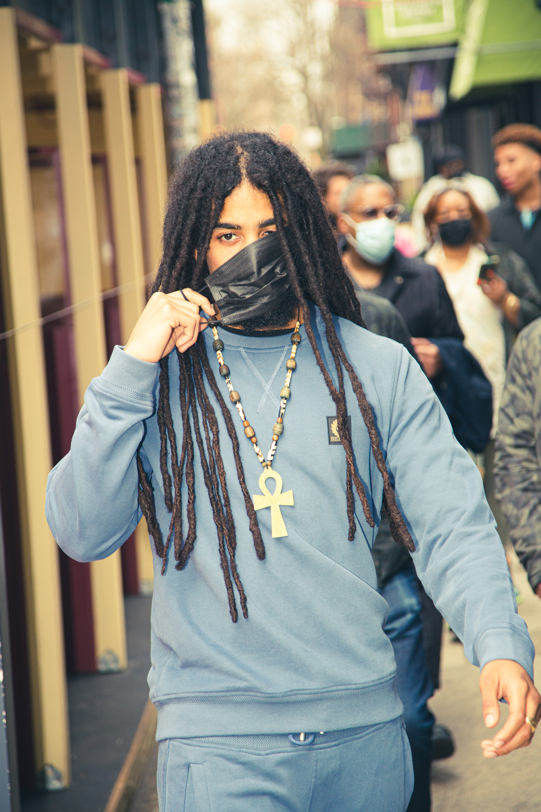
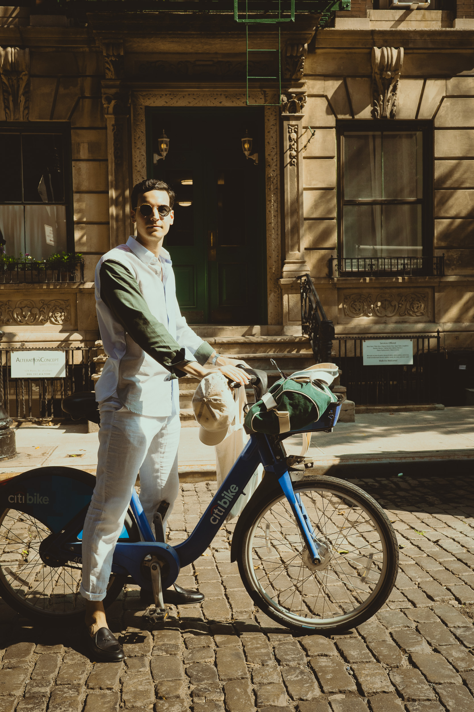
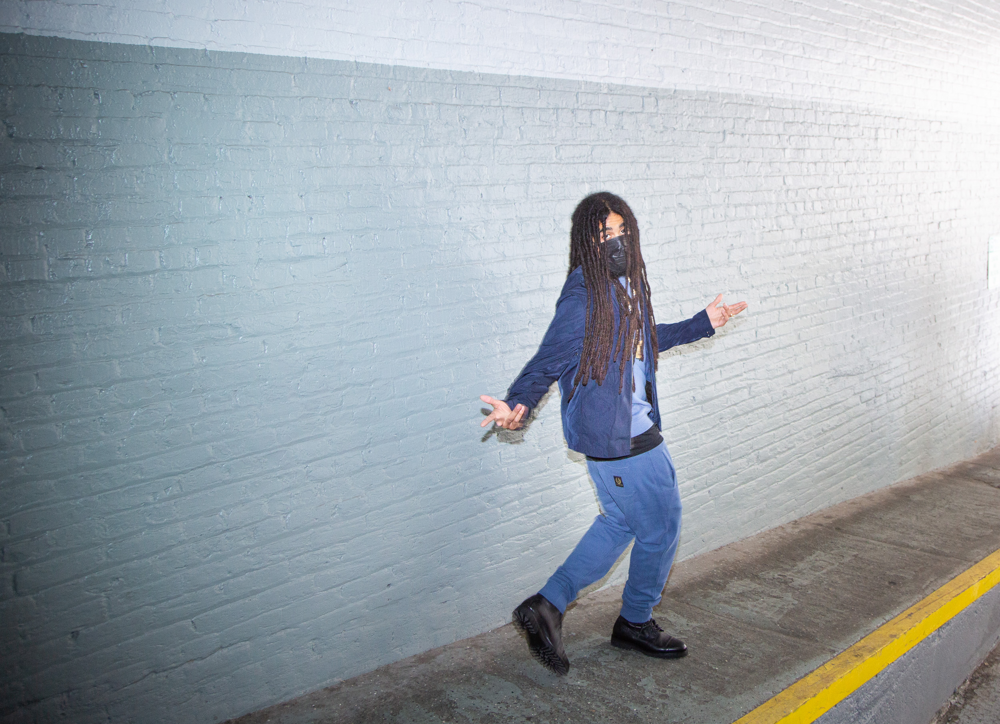
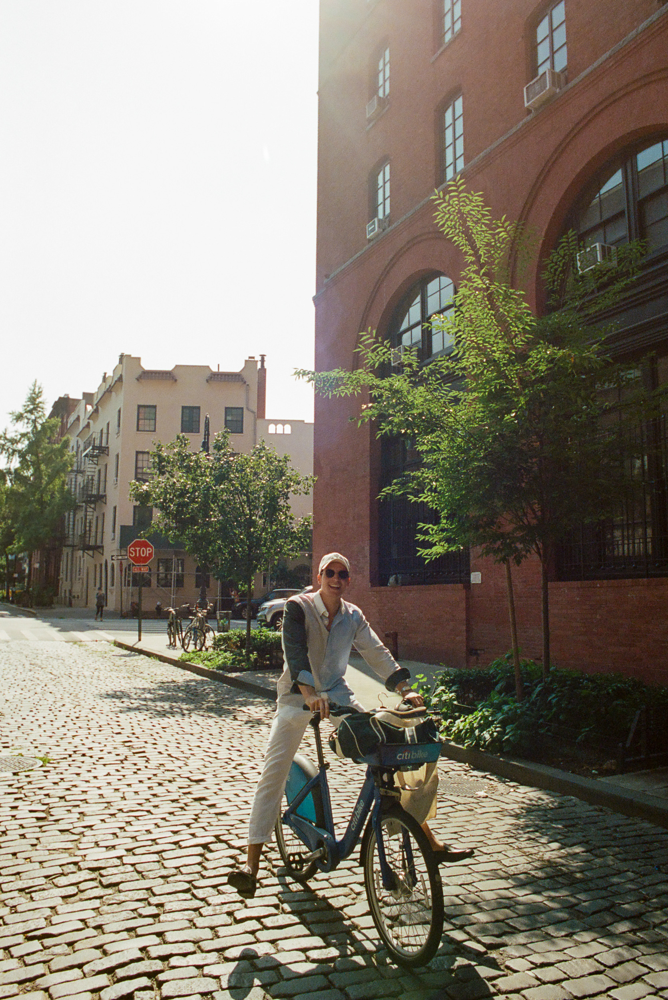
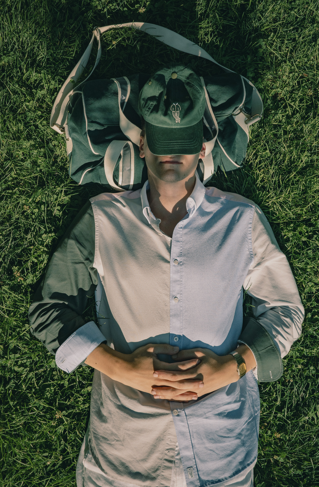
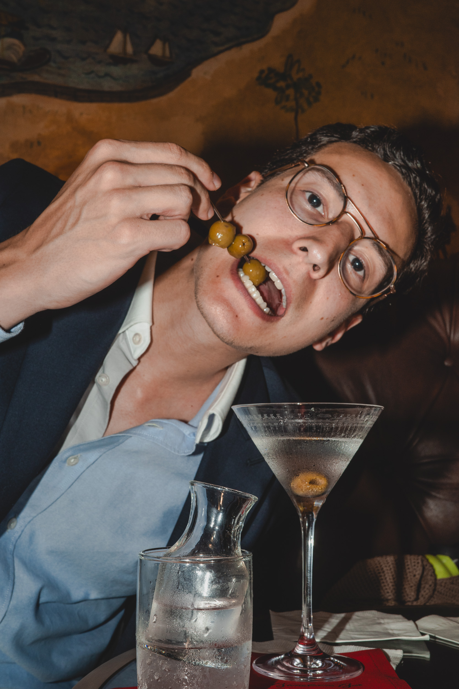

Moving through the city






This work already exists. It's what comes naturally — candid, observational, people moving through the world without knowing or caring they're being photographed.
Nobody ever asks for this. They should.










Ready to shoot the brief properly. Let's talk about what that looks like.